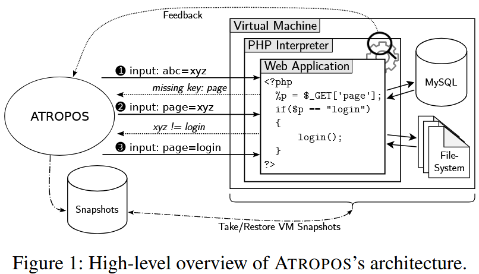

Atropos
Abstract
服务器端 Web 应用程序仍主要使用 PHP 编程语言开发。即便在当下，基于 PHP 的 Web 应用程序也饱受多种安全漏洞的困扰，从 SQL 注入到文件包含，再到远程代码执行等。自动化安全测试方法通常侧重于静态分析和污点分析。这些方法高度依赖对 PHP 语言的精确建模，并且常常会产生（可能大量的）误报。有趣的是，诸如模糊测试这样的动态测试技术在 Web 应用程序测试中并未得到广泛应用，尽管它们能够避免这些常见的缺陷，并且在其他领域（例如测试用 C/C++ 编写的原生应用程序）中迅速得到采用。在本文中，我们提出了 ATROPOS，这是一种专为基于 PHP 的 Web 应用程序设计的、基于快照和反馈驱动的模糊测试方法。我们的方法考虑了 Web 应用程序面临的挑战，例如维护会话状态和生成高度结构化的输入。此外，我们提出了一种反馈机制，用于自动推断 Web 应用程序使用的键值结构。结合八种新的漏洞检测规则，每种规则涵盖服务器端 Web 应用程序中一类常见的漏洞，ATROPOS 是第一种能够有效且高效地对 Web 应用程序进行模糊测试的方法。我们的评估表明，ATROPOS 在 Web 应用程序测试方面显著优于当前的技术水平。特别是，它平均至少能多发现 32% 的漏洞，同时在不同的测试套件中没有报告任何误报。在分析实际的 Web 应用程序时，我们发现了七个以前未知的漏洞，即使未经身份验证的用户也可以利用这些漏洞。
1 Introduction & Background
在访问量排名前十万的网站中，使用 PHP 做为开发语言的占比w3techs
现有的方法：
静态分析和污点分析：依赖对 PHP 语言的精确建模，尽管努力对 PHP 语言进行建模，但现有方法常常会产生（可能大量的）误报。此外，静态分析通常不适合有效地生成测试用例。
模糊测试：现有的模糊测试工具是针对特定类型的程序进行优化的，依赖于 Web 应用程序环境中不存在的几个属性：
- 目标程序暴露的接口相对简单（例如，标准输入或文件），而 Web 应用期望从 Web 服务器接收输入，而 Web 服务器又通过 HTTP（S）从 Web 浏览器接收输入
- 典型的模糊测试目标程序不会维护大量状态，但是 Web 应用程序维护着大量状态
- 经典的模糊测试目标程序处理面向字节流的输入，即翻转位和字节通常能够成功探索新的程序行为，而 Web 应用程序是面向文本的，期望高度结构化的输入，通常包含开发人员定义的标识符
- 传统的模糊测试工具无主要监控内存访问违规导致的崩溃，但是 Web 应用程序漏洞很多时候并不会发送崩溃，因此法检测到务器端是否触发了崩溃
针对 Web 的模糊测试
- WEBFUZZ 使用基于覆盖率的反馈，但只能检测客户端存储和反射型跨站脚本（XSS）漏洞
- CEFUZZ 仅限于检测远程代码执行和命令注入漏洞
- WFUZZ 不是完全自动化的，缺乏对 Web 应用程序维护的状态的感知，无法访问覆盖率信息，并且通常没有针对服务器端漏洞的漏洞检测规则
- WITCHER 是一种基于覆盖率引导的模糊测试工具，然而该方法仅限于检测两种类型的漏洞
主要贡献： + 提出了 ATROPOS，一种新颖的、基于反馈引导和快照的 Web 应用程序模糊测试方法，能够检测八种类型的服务器端漏洞 + 引入了一种新颖的反馈机制，该机制直接从解释器中提取相关的运行时信息，并为随机变异器提供信息，该反馈机制能有效提高覆盖率 + 我们提出了八种新的漏洞检测规则，能够高效地检测不同类型的服务器端漏洞，具有高检测率和低误报率
1.1 Challenges
复杂的接口
有状态的环境
用户进行身份验证以访问受保护或用户特定的资源，Web 应用程序严重依赖数据库或持久存储来维护状态。解决方法：1）在与 Web 应用程序的大多数交互中忽略状态，对于影响后续运行且难以恢复的关键操作由专家来判断是否进行；2）跟踪所有更改并实现特殊逻辑以最终恢复所有更改。
漏洞检测规则
用 PHP 或 JavaScript 等解释型语言编写的应用程序中的漏洞通常不会表现为内存安全崩溃，因此无法使用依赖于崩溃信号的标准漏洞检测规则来观察
2 Design

在内部，ATROPOS 的工作方式与 AFL++ 等模糊测试工具类似，ATROPOS 使用与 AFL++ 相同的算法（称为 explore）来进行种子选择和优先级排序。
为了实现对 Web 应用程序的模糊测试，做了一些更改：
- 由于 Web 应用由多个 PHP 文件组成，因此每次模糊测试随机选择一个文件
- 每个模糊测试输入可以包含多个请求，允许模糊测试工具在一次模糊测试迭代中顺序运行两个或更多文件
- ATROPOS 自定义一个变异器，以为每个请求生成高度结构化的键值对输入
- 设计了八个针对服务器端漏洞的自定义漏洞检测规则
ATROPOS 明确避免进行静态分析或污点分析等成本高昂的操作，以保持高吞吐量，并且其漏洞检测规则旨在保持低误报率。
2.1 Advanced Feedback Mechanisms
为了生成高度结构化的输入，我们设计了基于对 Web 应用程序输入的感知表示，依赖以下几个技术来构成整个高级反馈机制
2.1.1 Inferring Application-specific Keys
键名通常是由开发者定义的，不太可能是模糊测试随机生成的复杂语义标记。为了推断键名，ATROPOS hook 了 PHP 解释器访问$_GET、$_POST或$_SERVER等全局变量的过程，一旦发现对某个键进行访问，就会将该键名反馈给 ATROPOS，使得在下一次模糊测试中迭代设置预期的键名
2.1.2 Inferring Expected Values
ATROPOS 使用输入-状态对应关系的启发式方法。由于 Web 应用程序的输入是基于字符串的，因此我们 hook PHP 解析器中所有字符串比较函数，如zend_string_equal_val，当发现字符串比较时，将信息反馈给 ATROPOS，随后使用预期值替换产生错误的值。
但对于极端的字符串操作，如进行 base64 编码或 hash 等加密处理，ATROPOS 无法精确进行推断。该问题对于传统的模糊测试器也是具有挑战性的。ATROPOS 可以处理像STRTOUPPER或STR_REPLACE这样的字符串操作
2.1.3 Inferring Values for Regular Expressions
对字符串的直接或者部分比较并不能涵盖所有场景，在 Web 应用程序中还会使用正则表达式匹配的方式来处理字符串。
在这种情况下，ATROPOS 同样使用 hook 技术，每当发送正则匹配操作就将正则表达式反馈给模糊器，随后使用反向生成字符串技术，如XEGER等工具推导出对应输入
2.1.4 Inferring Keys from HTML
为了优化键名或键值对推断，ATROPOS 可以解析应用程序生成的 HTML 输出，以提取潜在有用的键或键值对。
在前面设计的通用推断机制可以找到所有的键值对，但需要多次迭代，因此该机制可以优化推断过程。
2.1.5 Performance Overhead
由于收集反馈信息并将其返回给模糊器的成本很高，ATROPOS 仅对产生新覆盖率的每个新输入执行一次动态高级反馈机制。因此，这是每个种子文件的一次性成本，与整个模糊测试活动相比，开销可以忽略不计
2.2 Stateful Environment
为了满足 Web 应用程序维护复杂状态（例如，会话、数据库、文件系统等）的需求，同时不影响模糊测试效率，我们在适合进行快照和恢复的隔离环境中运行 Web 应用程序。
我们使用针对模糊测试优化的快速快照，在处理每个输入后方便地恢复整个系统状态。快照确保不仅文件系统被恢复，而且用户会话甚至内存（包括数据库状态）也被恢复，由于恢复后无需重新启动数据库或任何在后台运行的应用程序，ATROPOS 避免了启动时的长时间初始化阶段。
为了实现文件系统和所有运行进程的快速快照恢复，我们在 NYX 框架之上构建 ATROPOS，在初始化所有资产（例如，数据库）后拍摄快照，并在每次模糊测试迭代后（即，Web 应用程序处理完模糊测试输入或在处理过程中达到一秒超时后）恢复到此快照。
2.3 Bug Oracles Beyond Memory Corruption
我们的启发式方法依赖两个通用条件来识别漏洞：
- 潜在不安全的函数表现出异常或可疑行为，通常会产生警告或错误
- 这种行为是由攻击者控制的输入触发的
如果这两个条件都满足，漏洞检测就会报告针对特定 PHP 函数发现的漏洞，我们的基本见解是，大多数常见漏洞是由一些关键函数引起的，例如mysqli_query()或unserialize()
我们对关键的漏洞点进行插装，并不需要和污点分析一样跟踪用户输入，而是监控函数点的可疑行为。如果用户的输入使得漏洞点发生错误，那就大概率表明用户输入没有经过清理，如果经过适当清理的输入不太可能破坏漏洞点的正常行为。
对于第二个条件，为了确定异常是由用户输入造成的，ATROPOS 的模糊器在输入时会插入一个特殊字符，并观察在漏洞点中该特殊字符是否出现来判断是否由用户输入造成。为了加快找到触发错误的输入的过程，ATROPOS 包含一个潜在漏洞触发字符串列表。
检测的漏洞类型：
- SQL 注入：如果输入在处理包含模糊器控制输入的 SQL 查询时导致语法错误，此漏洞检测报告一个漏洞。直观地说，只有未经清理的输入才应该能够通过更改查询来打破 SQL 查询的语法，使其避开预期的约束（引号等）。
- 远程代码执行：如果模糊器控制的输入在编译动态 PHP 代码（例如，在调用eval()期间）时引发语法错误，此检测报告一个漏洞。与 SQL 注入检测类似，如果攻击者控制的输入碰巧被解释，很可能会发生语法错误，因为大多数随机输入都是无效的 PHP 代码。清单 3b 为eval()函数提供了一个简短示例。此外，ATROPOS 注入在执行时报告漏洞的有效 PHP 代码，因为攻击者不应该能够在 Web 应用程序的上下文中运行自定义代码。
- 远程命令执行：识别远程命令执行（如清单 3c 中所示）更加困难，因为我们没有明确的错误消息。相反，此检测监控是否尝试执行不存在的二进制文件，如果二进制文件名在攻击者的控制之下，就会出现这种情况。此外，模糊器尝试注入一个命令，尝试执行我们放置在虚拟机中的自定义二进制文件，该文件会自动触发此检测。
- 本地和远程文件包含：如果对文件相关函数（如include()或require()）的调用导致错误，表明文件不存在，同时文件路径包含模糊器控制的输入，则报告文件包含漏洞（示例见清单 3d）。在某些情况下，应用程序在包含文件之前会检查文件是否存在。为了识别文件包含漏洞，即使它们受到此类存在检查的保护，ATROPOS 偶尔也会插入一个文件路径，当包含该文件时会报告文件包含漏洞。
- PHP 对象注入：如果攻击者控制的输入最终进入反序列化调用（unserialize()，参见清单 3e），则报告对象注入漏洞。由于序列化数据是结构化输入，解析错误可用于检测可疑行为，类似于 SQL 注入检测。
- 服务器端请求伪造：如果可以向私有地址范围（例如，http://192.168.0.1）发出资源请求，同时包含模糊器控制的输入，则此检测报告一个 SSRF 漏洞（例如，通过控制对file_get_contents()的调用的主机，见清单 3f）。
- 任意文件读写：由于很难确定观察到的文件操作是否恶意，我们保守地将此漏洞检测限制在 PHP 文件上。如果 Web 应用程序尝试读取、写入、删除或重命名 PHP 文件，同时文件名中包含模糊器控制的输入，则触发此检测（参见清单 3g）。此外，ATROPOS 尝试提供一个触发检测的检测 PHP 文件，并根据对其应用的文件操作报告一个漏洞。
- 文件上传：这一类别也高度依赖上下文：上传某些文件可能对一个应用程序是允许的，但对另一个应用程序则构成漏洞。我们保守地仅将上传 PHP 文件（即，以.php 结尾的文件）视为安全问题，因为这是最明确的违规行为。如果通过相应的挂钩函数（例如清单 3h 中的move_uploaded_file()）成功上传 PHP 文件，我们认为此漏洞被触发。